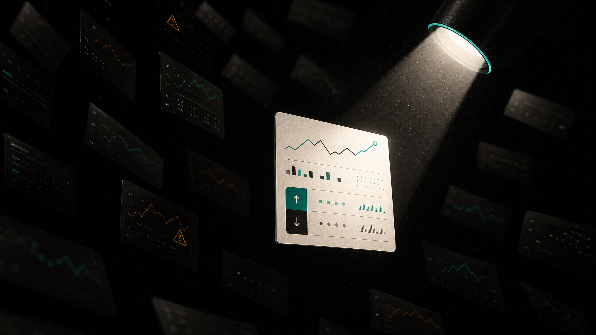
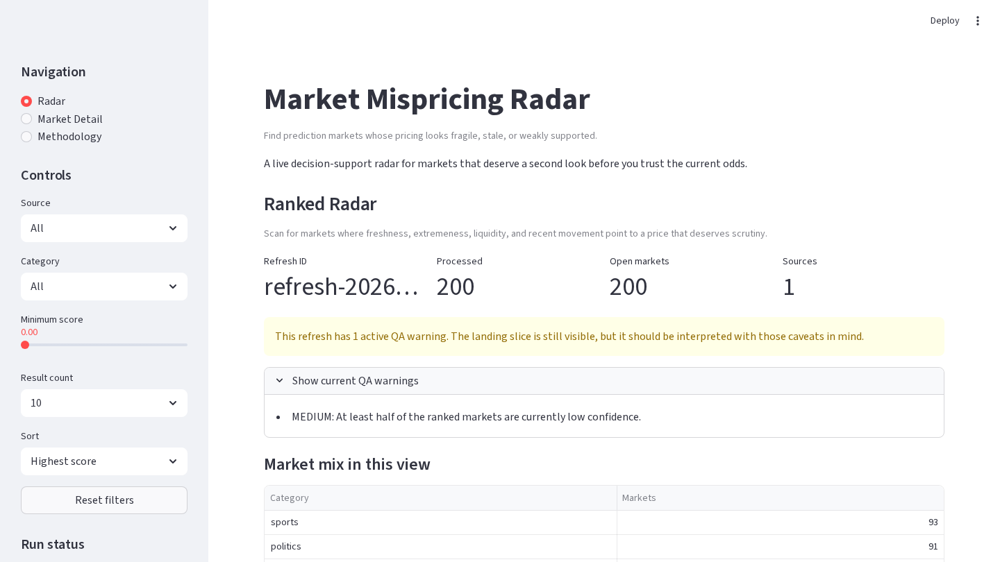
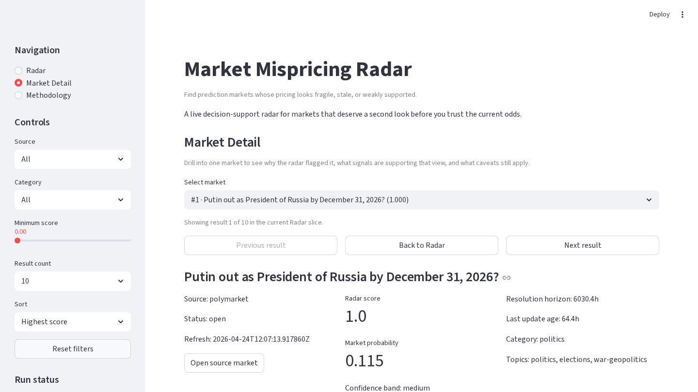
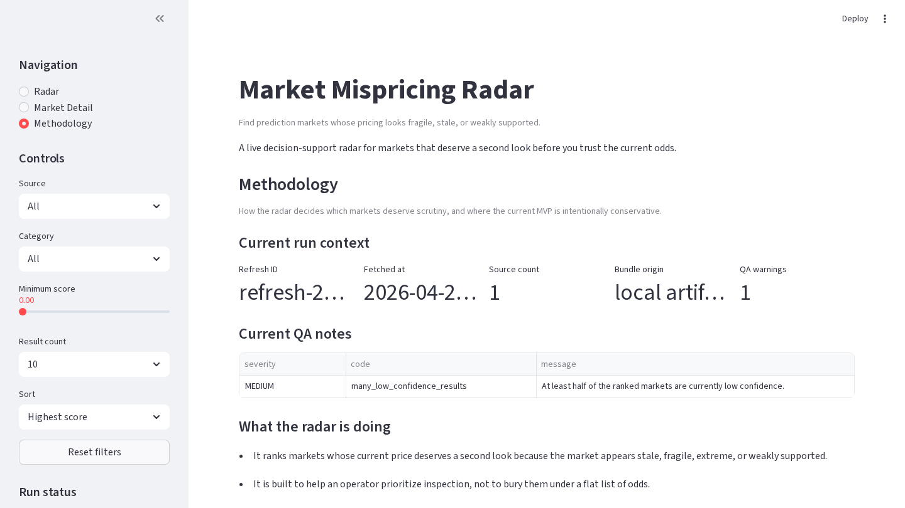

ZerveHack submission
Market Mispricing Radar
A live prediction-market radar that surfaces fragile, stale, extreme, or weakly supported prices
Niek / Jefke · locked safe local default ready

Market inspection
Raw odds are not enough
- Too many markets compete for attention
- Fragile pricing can hide in plain sight
- Users need reasons, not just ranks
Product shape
The product is an explainable triage surface
- Fetch live Polymarket market data
- Score staleness, extremeness, weak support, and instability
- Rank markets by inspection priority
- Explain why each market surfaced
- Expose caveats instead of hiding them


Market inspection
The score is inspection evidence, not a profit promise
- Score drivers show what moved the market up the radar
- Observed signals make the ranking auditable
- Caveats keep the MVP honest

Market inspection
Why this fits ZerveHack
- Notebook blocks produce the live analysis pipeline
- Outputs flow into a deployed Streamlit product
- The workflow turns analysis into something judges can inspect
Final-mile truth
Submission status is near-ready, not pretend-complete
Ready
locked safe local demo path
Ready
submission copy + notes
Ready
verified public Zerve notebook link
Safe local demo is verified. Public Zerve notebook link is verified; public share post still needs human-approved platform/copy.
Close
A usable radar for markets worth a second look
Default demo: locked safe local path · Drilldown: Putin out as President of Russia by December 31, 2026?